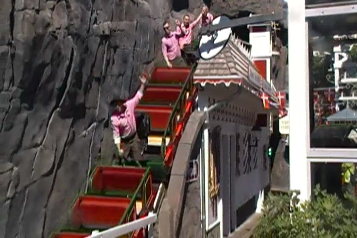
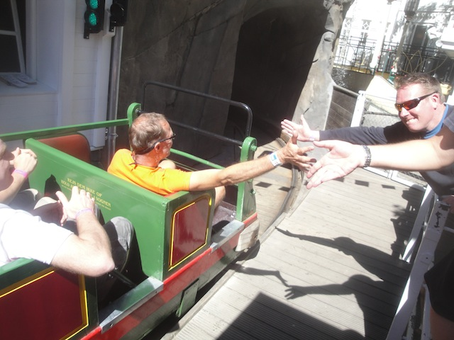
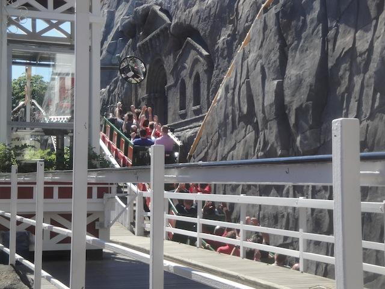
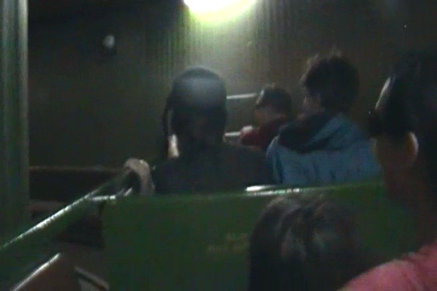
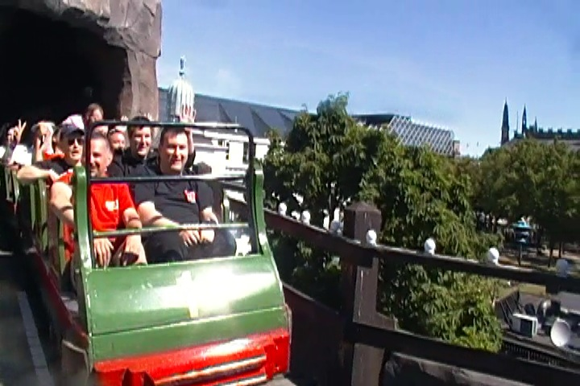
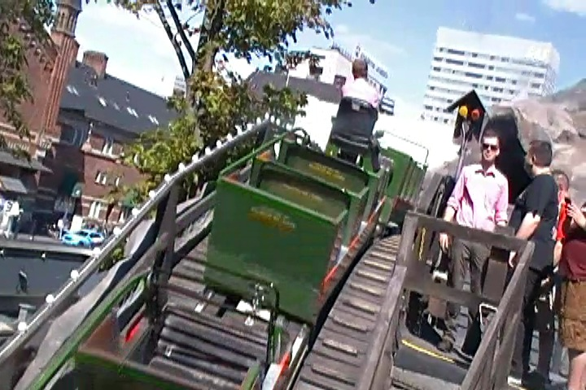
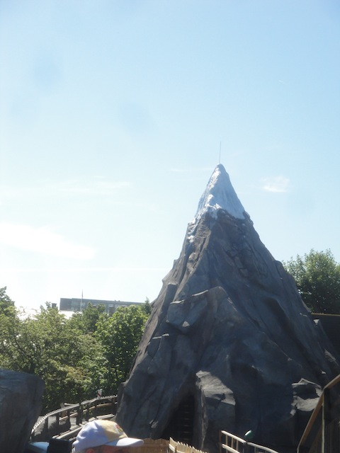
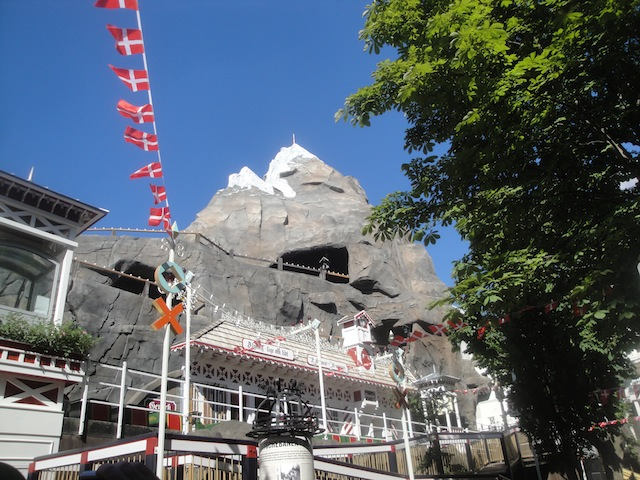

| |
Rutschebanen Review

We're here at Tivoli Gardens, where we'll be reviewing the parks original coaster that's been around since the 1910s. Rutschebanen. Now this is one of the original Side Friction coasters that's actually still operating to this day. Now this is one of the oldest coasters still operating in the world today. And you can tell by its history. As while I rarely ever talk about the history of a roller coaster, I just have to talk about the history of this ride, because it's crazy. The ride opened up in 1914 and originally had the mountains it has today, but they forced off in the 1920s because they thought the mountains were too fun and they wanted Copenhagen to be a serious city. So Copenhagen used to literally be anti-fun. They eventually added the mountains back in the 21st Century after they learned to embrace fun (and realized that Tivoli Gardens was a star attraction of Copenhagen). Seriously, this whole thing about the mountains on the ride sounds like a plot to a bad movie with the villian being the city council eventually having to learn the lesson about the importance of fun. But that's not even the biggest part of their history that I want to talk about. OK, so you know that World War II happened, and that Nazi Germany invaded a lot of land in Europe, and some of that land included Denmark (if you didn't know that, please study up on your history). So yeah. Denmark was being occupied by the Nazis, but they put up a fight. So to gain Denmark, the Nazis attacked Copenhagen, and in that attack, they went after Tivoli Gardens as it was a big staple of Copenhagen. And part of their attacks on Denmark was fire-bombing Rutschebanen. Yes. This roller coaster was fire-bombed by F*CKING NAZIS!!! OK, after doing some research, it wasn't quite the Nazis (though it was bombed while Nazi Germany was occupying Denmark). At first, it was thought to have been bombed by a Danish resistance group. But now, more people belive that the bombing of Tivoli Gardens was conducted by "The Peter Group", which was a group of Danes who were loyal to the Nazis occupying them, and collaberated with them to keep Denmark under Nazi control. Yeah, that makes much more sense as "Why would a Danish resistance group bomb one of the star attractions of Copenhagen? Tivoli Gardens was NOT part of Nazi Germany and bombing Tivoli Gardens would NOT help fight off the Nazis". The bombing destroyed most of the park, including their famous concert hall. But Rutschebanen was bombed too. By Danish Nazi Collaberators in f*cking World War II!! How many roller coasters can say they were bombed in World War II? Can any other coaster claim that they were bombed during World War II? Yeah. That's just some crazy history right there. But let's go back to present day and ride this ride that was bombed by Danish Nazis! So yeah. Let's hop in the trains, pull down the lap bar, wave hello to the brakeman, and we're off. We immedietly head into a turn and begin to "TAKE THE TUNNEL!!!". Hey, I have no problem with the turn inside the mountain. We then begin to climb the lifthill. But we're still inside the mountain. Well this is a problem. How the hell are we supposed to get out of here? No worries. We just break through the mountain. We're now mountaineers. Yodel-yodel-a-ee-ooh!!! We crest the lifthill, getting a nice view of the fake mountains around us, as well as of the Star Flyer and the streets of Copenhagen. We head around a turn, just enjoying the view when we come across one of the mountains. How are we supposed to get around this? We don't. We go straight through it and into the first drop. TAKE THE MOUNTAIN!!! We then head up and over a small little hill and thanks to the brakeman, it actually gives us some decent airtime. We head up another small hill, get a little airtime, and head around a turn inside the mountain. Oh crap!! It's time for us to TAKE THE MOUNTAIN AGAIN!!! We get a little bit of laterals inside the turn and we pop back out and head down another drop. WEE!!! Oh, and we TAKE THE MOUNTAIN AGAIN!!! We briefly break out after the drop, still in a deep vally, surrounded by the fake mountains as you rise up another hill, but they still completely dwarf you. Oh, and enjoy the light while you still can. We pop back into the mountain, head around yet another turn, only to break on out and head down another drop. YAY!!! We head up another small little hill and go around another turn. And that essentially leads to a series of turns in the dark. You get some decent laterals at this point of the ride. Fun. We pop out of the mountain and head down another drop. And thanks to the brakeman, we actually get some airtime. Wee! We head up and over another airtime hill. Wee! Airtime! We then head up another hill, go around a turn, BACK INTO THE MOUNTAIN!!! And now we essentially go through some turns in the dark. It's fun and all, but I just have to say this. DO NOT STICK YOUR ARMS OUT!!! I know you aren't supposed to do that at all. Don't do that. BUT ESPECIALLY ON THIS RIDE!!! The tunnels on this ride are incredibly narrow. We eventually head out of the darkness, reach the light, and glide right into the brake run. And yeah. That's Rutschebanen. One of the few side friction coasters left in the world and one of the oldest coasters still operating. This is just a fun little ride. I love that this ride still has its brakeman (unlike its sister ride over at Bakken), as that gives it more airtime. And that doesn't even go into the aspect of authenticity and saving history. And considering the history of this ride (Seriously, the first third of this review is literally just explaining the history of this ride), this is one part of Tivoli Gardens I'm glad is still here to this day. I hope it stays, lives a nice long life, and that you check it out when you visit the park. It's a really fun ride.
7/10
Location: Tivoli Gardens
Opened: 1914
Built by: Valdemar Lebech
Last Ridden: June 15, 2014
Rutschebanen Photos








Home
|